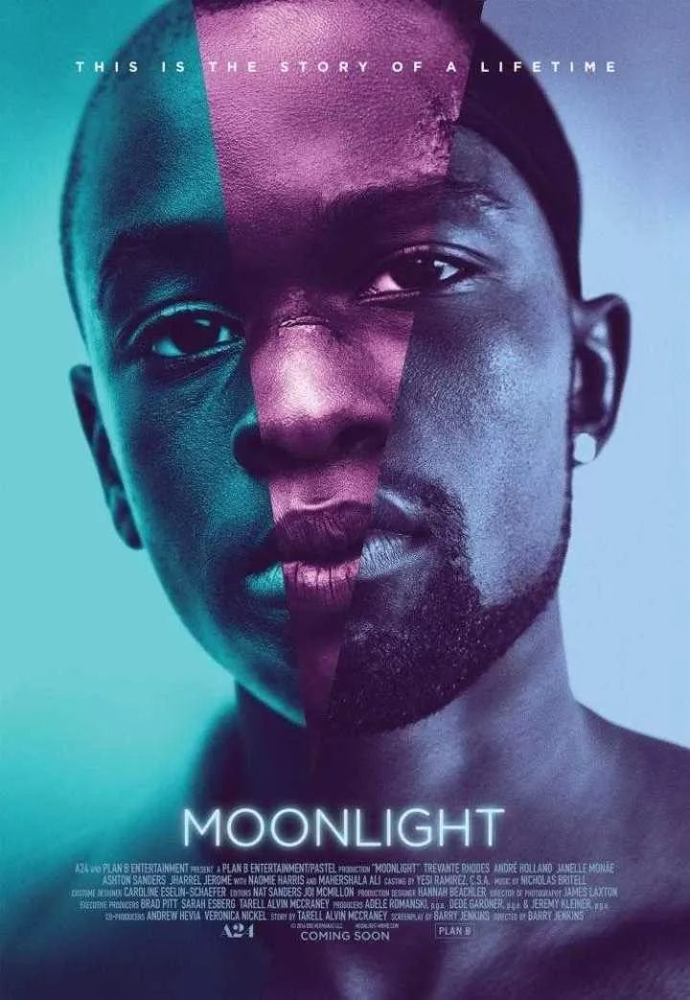
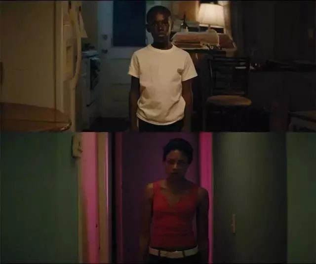
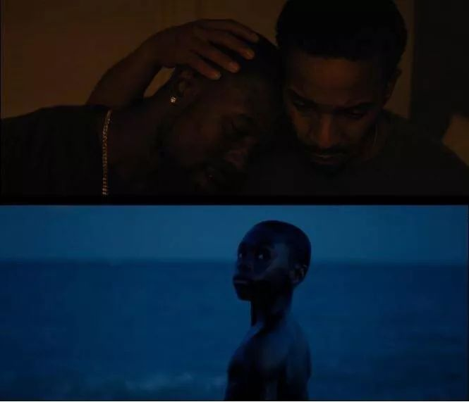
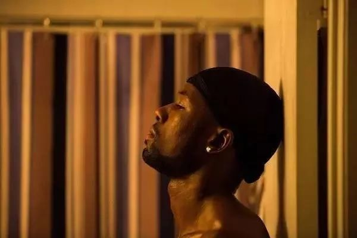

“神秘观影会到底看什么啊！” | 紫色校园日系列活动

“Some point you gotta decide for yourself who you gotta be. Can't letnobady make the decsion for you."
总有一天你需要决定自己做什么样的人，不要让任何人来给你做决定。
——《月光男孩》


近年来同性题材的逐步打开为电影提供了不一样的视角。同性之爱非冰非火，它是彩虹的颜色，有同样温暖的温度和同样精彩的故事。《月光男孩》出现后一举将奥斯卡最佳影片，最佳男配角和最佳改编剧本被收入囊中。抛开在社交网络上被争执的政治正确与否的问题，《月光男孩》毫无疑问是一部有实力的优秀影片。整部电影精致细腻，镜头语言设计工整，整个影片充满了纯粹的人性表达。

主角虽然是黑人、同性恋，但是整部影片并没有套用种族歧视或者平权斗争，这两个标签是主角Chiron与生俱来的，就像高矮、胖瘦、男女，只是每个个体不同的特征而已，《月光男孩》更像是一部内向小男生坎坷的成长故事。

年幼时吸毒母亲带来的暴对待，少年时被排挤欺凌的孤单，长大后被爱人背叛的伤痛，主角背负着过多的迷茫挣扎和压抑痛苦，完成了自我成长和救赎。但是就算是再努力打造的坚固的外壳，这些不为人知的痛苦，仍会依附在内心深处，骨子里还是不堪一击的脆弱和孤独。
《月光男孩》集中了LGBT、黑人、毒品、原生家庭、校园欺凌等，它想想表达的主题很多元化，每个人看完《月光男孩》之后都有不一样的见解。在紫色校园日，推荐这部影片给大家，希望大家能够喜欢(ˇˍˇ)


说了这么多
你总不会还看不出
观影会要看的就是《月光男孩》吧
观影结束之后还会有分享交流会哦
一定不要错过啦
时间
10.21（今天）
18:30-21:00
地点
紫金港某处神秘的角落
具体地点请小伙伴报名后留意短信通知
费用
本次活动将收取15/人场地费
同时获赠免费饮品一杯
活动报名
点击阅读原文

各位看完电影之后
也可以看看下面这篇文章
你看我们超贴心的都没有剧透（。